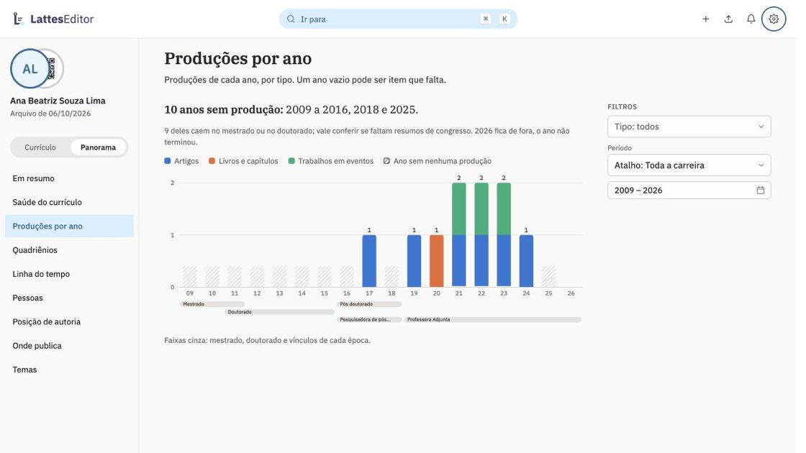
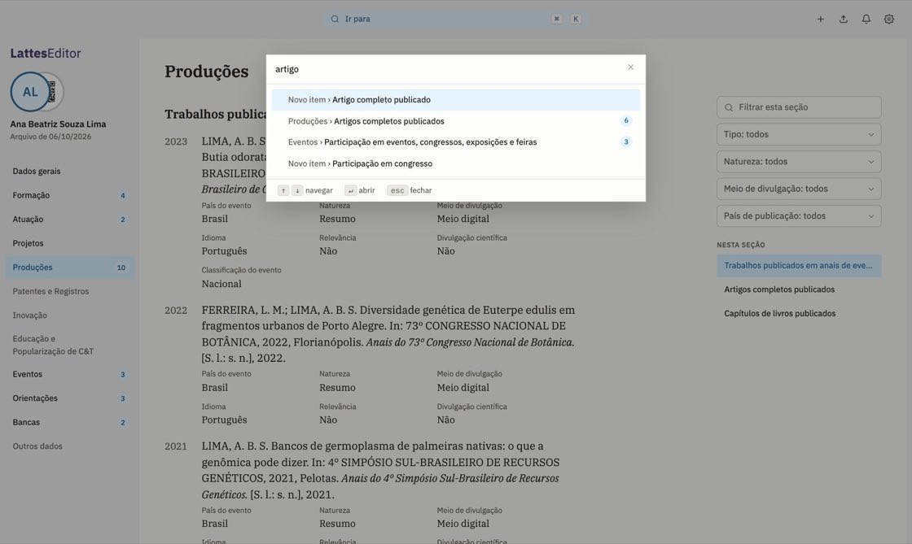

Contagens por quadriênio
Consulte os períodos da CAPES ou os últimos cinco e dez anos. Exporte as contagens em CSV para trabalhar com elas em uma planilha.
Atualize publicações, formação e outros dados no computador. O Panorama, em desenvolvimento, reúne gráficos de produção, pessoas e períodos da sua trajetória.
Não é preciso criar uma conta.

Veja a produção de cada ano e as pessoas com quem trabalhou. Ao selecionar um número no Panorama, você pode abrir os itens que compõem aquela contagem.
Compare os tipos de produção ao longo dos anos. Os filtros permitem escolher um intervalo ou usar um período predefinido.
Capturas da versão em desenvolvimento com dados fictícios. Os botões acima alternam as telas da prévia.
Consulte os períodos da CAPES ou os últimos cinco e dez anos. Exporte as contagens em CSV para trabalhar com elas em uma planilha.
“Saúde do currículo” reúne itens sem DOI, ISSN, palavras-chave ou título em inglês. Abra a lista correspondente para revisar os campos.
Em resumo · Saúde do currículo · Produções por ano · Quadriênios · Linha do tempo · Pessoas · Posição de autoria · Onde publica · Temas
Os gráficos são calculados no computador a partir do currículo aberto.
Escolha um artigo, evento ou projeto para ver como o tipo de item muda o envio ao Lattes.
Abra o currículo pela extensão ou use um ZIP/XML exportado do Lattes. O exemplo interativo usa dados fictícios e fica disponível com JavaScript.
O app identifica os itens que a extensão consegue enviar. Para os demais, gera um arquivo para o Importar do Lattes ou mostra os dados para copiar à mão.
As produções aparecem agrupadas por tipo e ano, com filtros e um índice à direita. Clique em um item para editar seus campos. A busca por atalho também encontra seções e tipos de item.

tipos disponíveis para criação, incluindo itens vinculados a uma atuação ou projeto.
O editor permite criar todos os tipos de item do currículo. Publicações podem ser preenchidas a partir de um DOI. As buscas de instituições, cursos, áreas e agências usam as listas do Lattes. Parte dos itens novos ainda precisa ser copiada manualmente para a plataforma.
Localize possíveis duplicatas, DOI e ISSN inválidos, datas inconsistentes e vínculos que podem estar desatualizados. O relatório inclui a última publicação e as alterações desde a exportação.
As verificações não alteram os dados.
Compare exportações para consultar mudanças feitas no editor ou no Lattes. O registro de envios guarda os valores anteriores e oferece opções para desfazer alterações.
Selecione as seções que deseja imprimir ou salvar em PDF. A formatação segue a NBR 14724, com referências na NBR 6023. O app também gera um código QR para o currículo público.
O painel “Enviar ao Lattes” lista as alterações pendentes e mantém o registro dos envios. A extensão usa a sessão já aberta no Chrome ou Brave, sem repassar sua senha ao editor.
Depois de gravar uma alteração compatível, a extensão lê o formulário para conferir os valores. Uma divergência interrompe o envio.
Na versão de desenvolvimento, estão habilitadas para teste as inclusões de formação, atuação, idiomas, prêmios, vínculos, registros, ensino e eventos. Também há operações para excluir idiomas e vínculos, alterar dados de identificação e endereço, editar formação, eventos e prêmios, e automatizar o Importar.
Essas operações ainda precisam de testes acompanhados no Lattes. A conferência de alguns registros e atividades é incompleta; a automação do Importar ainda não teve uma inclusão real confirmada. Patentes, projetos e outros tipos continuam com preenchimento manual.
A versão instalada da extensão determina as operações disponíveis. Consulte as notas da versão antes de usar os recursos em teste.
O editor salva uma cópia criptografada do currículo no computador. A chave fica no cofre do sistema operacional. Não há conta de usuário nem armazenamento do currículo em um servidor do app.
Os campos de dados pessoais ficam ocultos até você acionar o botão de exibição. O app também permite consultar e trocar a foto do perfil.
A extensão pode solicitar a exportação na sua sessão do Lattes e abri-la no editor. Outra opção é arrastar para o app um ZIP ou XML que você já exportou. Depois de aberto, o currículo pode ser editado sem conexão.
Ao colar um DOI, o app consulta os dados da publicação na Crossref. País, idioma, natureza e participação são escolhidos em listas. A extensão consulta instituições, cursos, áreas do conhecimento e agências no Lattes; as duas últimas listas ficam guardadas para uso posterior. Se a consulta estiver indisponível, os campos aceitam texto.
O atalho ⌘K ou Ctrl K abre a busca de seções, grupos e tipos de item. Cada seção tem filtros e atalhos por ano. Nas configurações, você pode escolher o tema claro ou escuro. Avisos do app informam problemas de conexão e incompatibilidades com a extensão.
O app verifica atualizações ao abrir e a cada 15 minutos. A consulta também está disponível em “Verificar atualizações”, nas configurações. A extensão para Chrome e Brave é instalada a partir de um ZIP. Para atualizá-la, substitua a pasta e recarregue a extensão no navegador.
Esta página carrega as fontes tipográficas da Precisa. No app, a consulta de publicações envia o DOI à Crossref. A foto é carregada do CNPq, e a extensão acessa o Lattes pela sua sessão no navegador. O app também consulta a distribuição de novas versões para verificar atualizações. O currículo não é enviado a um servidor do editor.
As notas de versão listam os recursos de cada distribuição. O Panorama e as operações indicadas como “em teste” nesta página pertencem ao código de desenvolvimento de 15 de outubro de 2026 e podem não estar na versão disponível para download. A exportação em BibTeX, RIS e Word ainda não está disponível.
Escolha a versão para o seu sistema operacional.
No app, você pode abrir o currículo pela extensão ou usar um ZIP/XML exportado do Lattes. Esta demonstração usa dados fictícios.
Escolha o tipo de item e preencha o título. A prévia mostra a forma de envio correspondente.
Confira o título e a forma de envio na prévia. Use “Editar” se precisar mudar o texto.